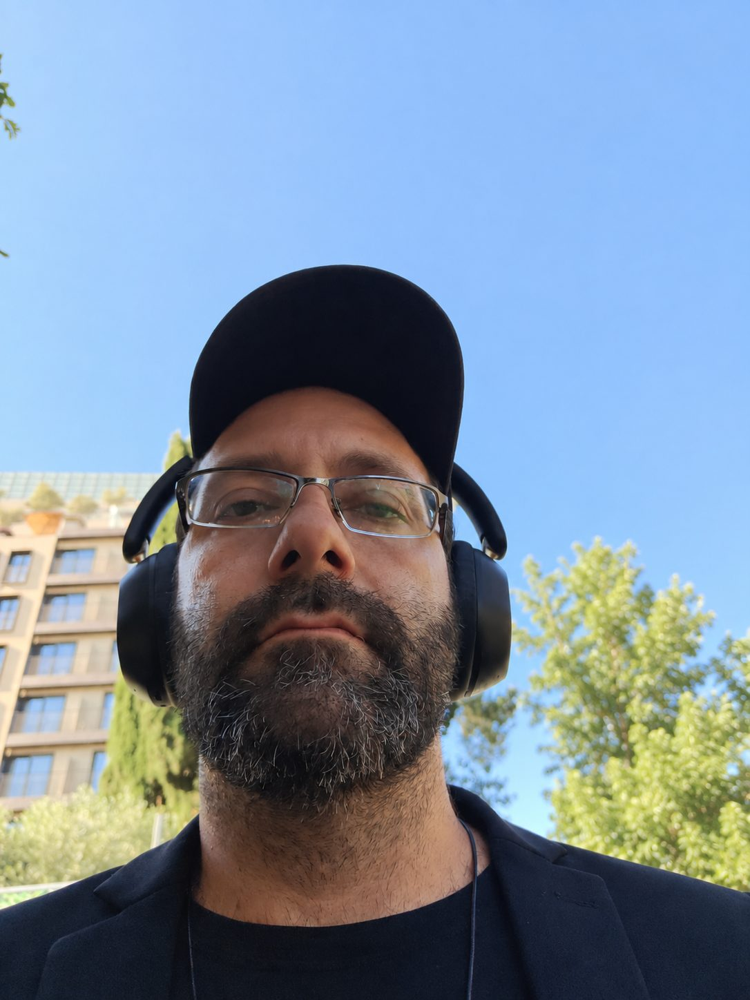

David Amor, coach de vie à Jérusalem
Quand toutse mélange,un regard clair.
- Français · English · עברית
- Visio ou téléphone
- 1er appel de 15 min offert
J'écoute vraiment, je dis les choses franchement et avec douceur, et vous repartez avec des actions concrètes. En français, en anglais ou en hébreu, en visio ou par téléphone.
Réserver mon appel offert15 minutes pour faire connaissance, sans engagement.

Celui qu'on appelle quand ça ne va pas.
Depuis des années, mes proches et mes amis m'appellent dans les moments difficiles. Je les écoute, je les conseille, gratuitement. Aujourd'hui, j'ouvre cet accompagnement à tous ceux qui en ont besoin.
Comment ça se passe
Un message
Vous m'écrivez sur WhatsApp. Je vous réponds pour fixer votre appel découverte.
15 minutes offertes
On fait connaissance, sans engagement, en visio ou par téléphone.
Des actions concrètes
Si on continue, chaque séance se termine par des actions simples, à faire dès le lendemain.
Vous vous reconnaissez ?
- « Je porte tout, tout seul, et personne ne m'écoute vraiment. »
- « Je tourne en rond sur une décision depuis des semaines. »
- « À la maison, quelque chose coince et je ne sais pas par où commencer. »
- « Je ne crois plus assez en moi pour avancer. »
Pas besoin d'aller mal pour se faire accompagner. Il suffit de sentir que, seul, ça n'avance plus.
Votre valeur ne dépend pas de ce que vous faites.
Mon parcours
- 2004 à 2010, Montréal
Psychologie et enseignement
Des études de sciences et de psychologie au cégep Saint-Laurent, puis de psychologie et d'enseignement à l'Université de Montréal.
- 2013 à 2015
Le terrain
La vente, en face-à-face et au téléphone. Des rencontres et des échanges, tous les jours.
- Depuis 2016, Jérusalem
Entrepreneur
Plusieurs entreprises créées : gestion immobilière, marketing digital, puis un studio d'intelligence artificielle.
- Aujourd'hui
J'accompagne
Celles et ceux qui traversent une période de doute, en français, en anglais ou en hébreu.
Ma façon de faire
Franc, avec douceur
Je dis les choses clairement, en m'adaptant à la sensibilité de chacun.
La confiance et la joie
On avance avec confiance et avec joie, plutôt qu'avec la peur et la culpabilité.
Du concret
Chaque séance se termine par des actions simples, à faire dès le lendemain.
Tarifs
- Appel découverte15 minutes pour faire connaissance
- Offert
- Séance individuelle1 heure, en visio ou par téléphone
- 60 €
- Pour avancer en un moisAccompagnement4 séances, une par semaine pendant un mois
- 220 €
Paiement par virement bancaire en euros. Je vous envoie les coordonnées après l'appel découverte, avec la référence à indiquer.
Questions
Comment se passe une séance ?
Vous me parlez de ce qui vous occupe. J'écoute, je pose les bonnes questions, et je vous aide à y voir clair. Vous repartez avec quelques actions concrètes.
Dans quelle langue ?
En français, en anglais ou en hébreu, comme vous préférez.
En visio ou par téléphone ?
Les deux sont possibles, par WhatsApp. Vous n'avez rien à installer de plus.
Est-ce confidentiel ?
Oui. Ce que vous partagez reste entre nous.
Est-ce une thérapie ?
Non. Le coaching de vie est un accompagnement : il ne remplace ni un médecin, ni un psychologue, ni un traitement. En cas de détresse, contactez un professionnel de santé ou le 15 (en France).
Comment payer ?
Par virement en euros, après l'appel découverte offert. Je vous envoie les coordonnées et la référence par WhatsApp.
Faites le premier pas.
Un message suffit. Je vous réponds pour fixer votre appel découverte offert.
M'écrire sur WhatsApp